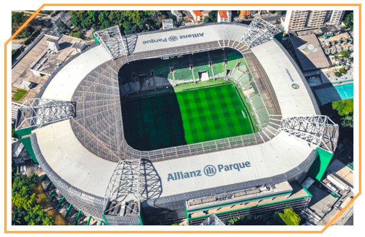
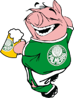

A História
A Sociedade Esportiva Palmeiras, mais conhecida como Palmeiras, é um clube de futebol profissional brasileiro com sede na cidade de São Paulo, no distrito de Perdizes. O Palmeiras é um dos clubes mais populares da América do Sul, com cerca de 16 milhões de torcedores e mais de 130 mil torcedores filiados.
Da Itália para o Brasil
O Palmeiras foi fundado por imigrantes italianos em 1914, como "Palestra Itália" . No entanto, o clube mudou de nome em 14 de setembro de 1942, como resultado da adesão do Brasil aos Aliados na Segunda Guerra Mundial contra a Itália e as potências do Eixo. Desde então, o Palmeiras conquistou 17 competições nacionais de primeira linha, incluindo um recorde de 11 Campeonato Brasileiro Série A , 4 Copas do Brasil , 1 Copa dos Campeões e 1 Supercopa do Brasil , tornando-se o clube mais bem-sucedido em competições nacionais de primeira linha em Brasil. No futebol internacional de clubes, o Big Green conquistou a primeira Copa Intercontinental conhecida como International Champions Cup ou 'Copa Rio' em 1951, a Copa Libertadores de 1999, 2020 e 2021 , a Recopa Sul-Americana de 2022 e a Copa Mercosul de 1998 . O clube também obteve sucesso em nível regional, pois conquistou 5 títulos interestaduais ( Torneio Rio – São Paulo ) e 25 títulos de campeonatos estaduais ( Campeonato Paulista ).
Primeiro escudo
- Palestra Italia
Elaborado nos primeiros anos de vida do clube, era o símbolo institucional utilizado em impressos, carteiras sociais e na bandeira oficial. Na circunferência menor, de fundo branco, havia o contorno da Cruz de Savoia preenchido na cor verde com o “P” e o “I” arcaicos inseridos no meio, em amarelo. Acima, a inscrição “Palestra” em amarelo. Na circunferência maior, de fundo vermelho, a inscrição “Italia”, em amarelo.
Hino
O hino da Sociedade Esportiva Palmeiras foi composto em 1949 por Antonio Sergi, maestro compositor e regente da orquestra ítalo-brasileira. Nascido na Itália, o músico naturalizou-se brasileiro e tornou-se bastante conhecido por também atuar nas principais rádios de São Paulo – “Totó”, como era chamado, foi diretor artístico na Rádio Cruzeiro do Sul e regente da orquestra da Rádio Educadora Paulista, que posteriormente se transformaria na Rádio Gazeta.
Estádio
O Allianz Parque, também conhecido como Palestra Itália Arena, é um estádio multiuso em São Paulo, Brasil, construído para receber shows, shows, eventos corporativos e principalmente jogos de futebol do Palmeiras, proprietário do local. O estádio tem capacidade para 43.713 espectadores.
A história da mudança de mascote
O Porco foi o segundo mascote adotado oficialmente pelo Palmeiras. A iniciativa partiu do diretor de marketing do clube, João Roberto Gobbato, ainda na década de 1980. A expressão “Porco” se referia a forma pejorativa pela qual as torcidas adversárias chamavam a torcida palmeirense. A adoção do mascote aconteceu em 1986 por parte da torcida, visando dar fim nas ofensas vindas dos rivais.